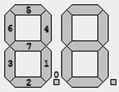

Die 7-Segment-Anzeige eignet sich hervorragend zur Ausgabe dezimaler und hexadezimaler Zahlen, ohne diese erst mühsam vom binären in das gewünschte Zahlensystem umzurechnen.
Die Segmente sind folgendermaßen nummeriert:
Für die Ansteuerung wird die Verwendung einer Tabelle empfohlen.
Beispiel für eine solche Tabelle, in der die Daten für die Hex-Zahlen 0 bis F gespeichert sind:
tabelle:
DB 01111110b, 00010010b, 10111100b, 10110110b, 11010010b, 11100110b, 11101110b, 00110010b, 11111110b, 11110110b, 11111010b, 11001110b, 01101100b, 10011110b, 11101100b, 11101000b
Achtung: Der Simulator unterstützt momentan nur einzeilige Tabellen. Alle Werte der Tabelle müssen in einer Zeile stehen, durch Komma getrennt.